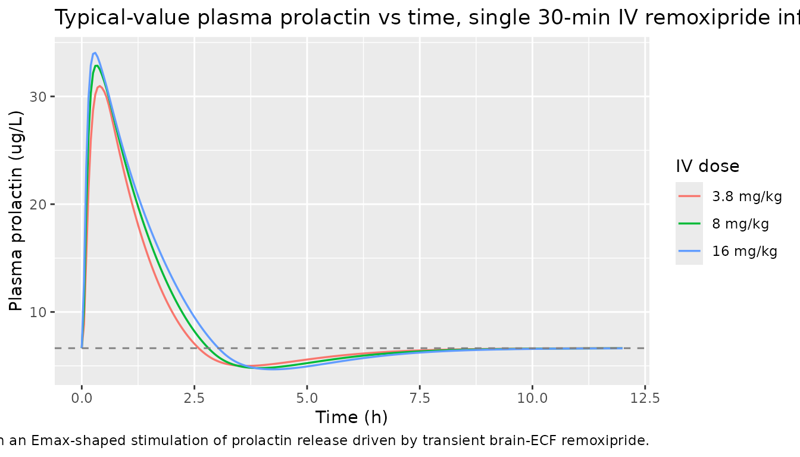
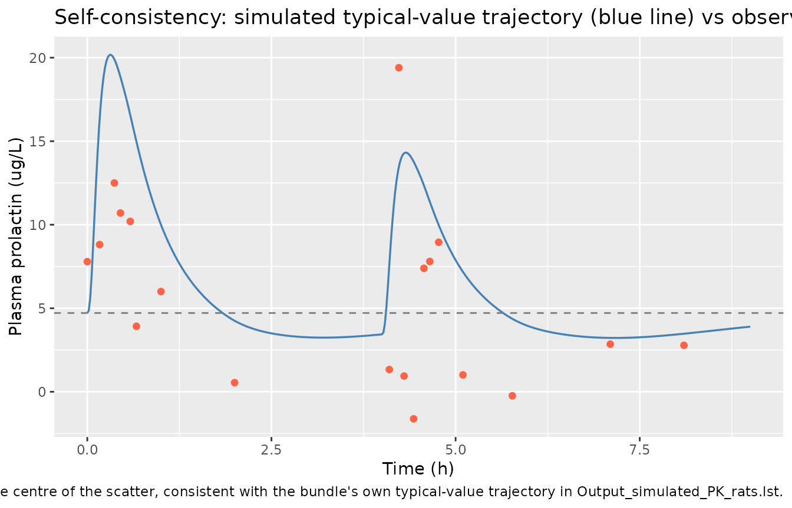

Remoxipride (Stevens 2012)
Source:vignettes/articles/Stevens_2012_remoxipride.Rmd
Stevens_2012_remoxipride.RmdModel and source
- Citation: Stevens J., Ploeger B. A., Hammarlund-Udenaes M., Osswald G., van der Graaf P. H., Danhof M., de Lange E. C. M. (2012). Mechanism-based PK-PD model for the prolactin biological system response following an acute dopamine inhibition challenge: quantitative extrapolation to humans. J Pharmacokinet Pharmacodyn 39(5):463-477. doi:10.1007/s10928-012-9262-4. DDMORE Foundation Model Repository: DDMODEL00000268.
- Description: Mechanism-based PK/PD model for the prolactin response to remoxipride in rats: 3-compartment plasma + brain-ECF + peripheral PK with parallel intranasal absorption (systemic and direct nose-to-brain), feeding a pool model for prolactin synthesis (with positive feedback), storage in lactotrophs, release into plasma, and elimination, where remoxipride brain-ECF concentration drives an Emax stimulation of prolactin release
- Article: https://doi.org/10.1007/s10928-012-9262-4
- DDMORE Foundation Model Repository entry: DDMODEL00000268
This model was extracted from the DDMORE Foundation Model Repository
bundle for DDMODEL00000268 (scraped to
dpastoor/ddmore_scraping/268/). The bundle contains:
-
Executable_PK_rats.txt– NMTRAN control stream (NONMEM 7.3, ADVAN9 + NWPRI prior on the prolactin elimination and EC50 THETAs). -
Output_real_PK_rats.lst– NONMEM listing on the original real rat dataset; theFINAL PARAMETER ESTIMATEblock (lines 1283-1313) supplies the parameter values used here. -
Output_simulated_PK_rats.lstandSimulated_PK_rats.csv– a shipped simulated dataset and re-fit listing, used as the self-consistency reference in this vignette. -
DDMODEL00000268.rdf– model classification (PK/PD purpose, research-stage metadata). -
20120910- DDMORE-WP1.3. Specificationdocument_remoxipride ECMdL.doc– DDMORE-internal model-encoding specification document; reproduces the publication’s abstract and parameter labels (BSLsd,BSLdd,kr,pr,kel,pr,EC50,pr,EC50,rem) but not the parameter values themselves (those are embedded as MS Equation 3.0 OLE objects that are not text-extractable). Confirms the publication match: Stevens et al. 2012, J Pharmacokinet Pharmacodyn, doi:10.1007/s10928-012-9262-4.
The Stevens 2012 publication itself is not on disk in this worktree, so the standard publication-figure replication and PKNCA-vs-published-NCA checks are out of scope. The validation in this vignette therefore follows the F.2 self-consistency and F.3 mechanistic-sanity substitutes from the extraction skill.
Population
Stevens 2012 fits the prolactin pool model to plasma-prolactin time
courses from male Wistar rats with chronic intracerebral microdialysis
cannulae and femoral-vein cannulae. The shipped simulated dataset
contains 43 rats across two studies (STUD = 1 and
STUD = 3) and four dose levels (3.8, 4.0, 8.0, 16.0 mg/kg
intravenous remoxipride), all at body weight 0.252 kg. Three
experimental cohorts feed the joint fit:
- A baseline-variation study without drug administration (used to pin the typical baseline plasma prolactin TBSL).
- A single-dose dose-response study at 4 / 8 / 16 mg/kg IV
(
STUDY_DD = 0, the reference category). - A double-dose study at 3.8 mg/kg IV with varying inter-dose
intervals (
STUDY_DD = 1, encoded viaSTUD == 3in the source data; the typical baseline is shifted by1 + e_studydd_bsl = 1 - 0.290 = 0.710for this group).
The PK structural parameters are fixed from a previously published
rat remoxipride PK study (Westerhout et al. 2011, doi:10.1007/s11095-011-0395-8) and reproduced here
verbatim from THETA(3)..THETA(13) FIX in the
DDMORE control stream. The PD parameters (TH1, TH2, TH14-TH19) are
estimated under an NWPRI prior on TH1 (prolactin elimination rate) and
TH2 (remoxipride brain-ECF EC50).
The model is preclinical (rat-only). Stevens et al. 2012 separately extrapolated the model to humans by allometric scaling of the prolactin release and elimination rates plus literature-derived human baseline prolactin and remoxipride PK; that human-scaled projection is not encoded in this implementation – only the rat-fitted typical-value parameters are.
The same metadata is available programmatically via
readModelDb("Stevens_2012_remoxipride")$population.
Source trace
Per-parameter and per-equation origin (also recorded as in-file
comments in
inst/modeldb/ddmore/Stevens_2012_remoxipride.R):
| Equation / parameter | Value | Source location |
|---|---|---|
lcl |
fixed(log(1.12)) |
Output_real_PK_rats.lst line 1283, TH3 FIX
(.mod L107: CL3 L/h) |
lvc |
fixed(log(0.0881)) |
.lst L1283, TH4 FIX (.mod L108: V3
L/kg) |
lq_brain |
fixed(log(0.700)) |
.lst L1283, TH5 FIX (.mod L109: Q4
plasma<->brain ECF) |
lvbrain |
fixed(log(0.873)) |
.lst L1283, TH6 FIX (.mod L110: V4 brain
ECF, L/kg) |
lq |
fixed(log(1.20)) |
.lst L1283, TH7 FIX (.mod L111: Q5
plasma<->peripheral) |
lvp |
fixed(log(0.417)) |
.lst L1283, TH8 FIX (.mod L112: V5
peripheral, L/kg) |
lfk40 |
fixed(log(0.302)) |
.lst L1283, TH9 FIX (.mod L113: K40 = FK40
* K30) |
lka |
fixed(log(1.54)) |
.lst L1283, TH10 FIX (.mod L114:
intranasal absorption rate KA) |
lftot |
fixed(log(0.892)) |
.lst L1283, TH11 FIX (.mod L115: total
intranasal bioavailability) |
f_systemic |
fixed(0.249) |
.lst L1283, TH12 FIX (.mod L116: F1 = FTOT
* THETA(12)) |
lk24 |
fixed(log(0.0331)) |
.lst L1283, TH13 FIX (.mod L117: K24 *
1000 = 33.1, divided by 1000 inside $PK) |
| `lkel_prl` (= K70) | `log(5.20)` | `.lst` L1283, `TH1`
(estimated under NWPRI; .mod L60) |
| `lec50_prl` | `log(0.0510)` | `.lst` L1283, `TH2`
(estimated under NWPRI; .mod L62) |
| `lbsl` | `log(6.64)` | `.lst` L1284, `TH14`
(.mod L56: typical baseline plasma prolactin, single-dose study) |
| `lemax_prl` | `log(17.5)` | `.lst` L1284, `TH15`
(.mod L61) |
| `lstdm` | `log(0.125)` | `.lst` L1284, `TH16`
(.mod L63: positive-feedback synthesis-stimulation slope) |
| `e_studydd_bsl` | `-0.290` | `.lst` L1284, `TH17`
(.mod L56: TBSL = THETA(14) * (1 + THETA(17) * STDY)) |
| `lk_release` (= K67) | `log(0.740)` | `.lst` L1284, `TH18`
(.mod L59: lactotroph->plasma release rate) |
| `gamma_prl` | `fixed(1.00)` | `.lst` L1284, `TH19
FIX` (.mod L64: Hill coefficient on the brain-ECF remoxipride
stimulation term) |
| `etalbsl` | `~ 0.0465` | `.lst` line 1294,
`OMEGA(1,1)` (log-scale variance on baseline prolactin; the .mod also
fixes OMEGA(2,2) and OMEGA(3,3) to zero) |
| `propSd` | `sqrt(0.0780)` | `.lst` L1310,
`SIGMA(1,1)` (proportional residual; .mod L143) |
| `addSd` | `sqrt(6.62)` | `.lst` L1313,
`SIGMA(2,2)` (additive residual on prolactin in ug/L; .mod L144) |
| `d/dt(depot) = -ka * depot` | n/a | `.mod`
`$DESL75 (DADT(1)) | |d/dt(depot_brain) = -k24 *
depot_brain| n/a |.modL77 (DADT(3)) | |d/dt(brain_ecf) =
k24depot_brain + k34central - k43brain_ecf -
k40brain_ecf| n/a |.modL88 (DADT(5)) | |eff = 1 + emax_prl *
cp_brain^gamma_prl / (ec50_prl^gamma_prl +
cp_brain^gamma_prl)| n/a |.modL85-93 (positive-feedback floor) | |std = stdm
* (lna7 - bsl_i)| n/a |.modL68 (KF = BSL * K70) | |kft = kf * (1 +
std)| n/a |.modL97 (DADT(6)) | |d/dt(prolactin) = lactotroph *
k_release * eff - prolactin *
kel_prl| n/a |.modL66 (A_0(6) = (BSL * K70) /
K67) | |prolactin(0) =
bsl| n/a |.modL102-103 (Y = IPRED * (1 + EPS(1)) +
EPS(2)) | |f(depot) <- ftot *
f_systemic| n/a |.modL38 (F2 = FTOT - F1`) |
The .mod also includes two NONMEM EXIT 1 ... early-exit
guards (IF(K30.LT.K40) EXIT 1 200,
IF(KA.LT.K24) EXIT 1 400, .mod L46-47). With
the published parameter values both inequalities hold
(K30 = 12.71 > K40 = 3.84;
KA = 1.54 > K24 = 0.033), so the guards never fire; they
are not reproduced in the nlmixr2 implementation.
Validation strategy
This bundle ships a simulated dataset
(Simulated_PK_rats.csv) and a re-fit listing
(Output_simulated_PK_rats.lst) but the linked publication
is not on disk. Following references/ddmore-source.md
Section “Validation strategy by model type” (decision tree -> no
PKNCA -> mechanistic / endogenous -> F.2 + F.3 substitutes), this
vignette validates by:
-
Steady-state hold (F.1 / endogenous-validation).
With no drug administration, the lactotroph and plasma-prolactin states
must stay at their analytic baselines. The .mod sets
A_0(6) = BSL * K70 / K67andA_0(7) = BSLso the system is at steady state att = 0; integrating forward without dose inputs must keep the states at those values within numerical tolerance. - Drug-response sanity. A single intravenous remoxipride dose must produce a transient brain-ECF concentration that drives an Emax-shaped stimulation of plasma prolactin, with prolactin rising above baseline, peaking, and decaying back as the brain ECF clears. A larger dose must produce a larger (and longer- lasting) response.
-
F.2 self-consistency against the bundle’s simulated
dataset. Re-simulate the bundle’s typical-value trajectory at
the conditions present in
Simulated_PK_rats.csv(rat 304: 3.8 mg/kg IV att = 0andt = 4h,STUD = 3,WT = 0.252kg) and confirm the simulated prolactin profile visually tracks the observedDVvalues from the CSV. The bundle’sOutput_simulated_PK_rats.lstrecords the same trajectory under the .mod’s NONMEM solver; an exact numerical match is not the goal (rxode2 and NONMEMADVAN9 TOL=3use different ODE solvers and tolerances), but the typical-value shape and magnitude must be consistent.
Setup
mod <- rxode2::rxode2(readModelDb("Stevens_2012_remoxipride"))
#> ℹ parameter labels from comments will be replaced by 'label()'
mod_typical <- rxode2::zeroRe(mod)
state_names <- mod$state
state_names
#> [1] "depot" "depot_brain" "central" "brain_ecf" "peripheral1"
#> [6] "lactotroph" "prolactin"1. Steady-state hold (no drug)
With no remoxipride dose, the analytic baselines
prolactin(0) = bsl and
lactotroph(0) = bsl * kel_prl / k_release must hold across
the integration horizon. For the single-dose study reference
(STUDY_DD = 0) this means prolactin = 6.64
ug/L and lactotroph = 6.64 * 5.20 / 0.74 ~= 46.66
“amount-units” (the prolactin-pool compartment has no scale factor in
the source, so the lactotroph state is in the same units as plasma
prolactin times time-dimension; what matters is that it stays
constant).
ev_baseline <- rxode2::et(seq(0, 24, by = 1))
ev_baseline_df <- as.data.frame(ev_baseline)
ev_baseline_df$WT <- 0.252
ev_baseline_df$STUDY_DD <- 0L
sim_baseline <- rxode2::rxSolve(mod_typical, ev_baseline_df,
returnType = "data.frame")
#> ℹ omega/sigma items treated as zero: 'etalbsl'
baseline_summary <- sim_baseline |>
dplyr::filter(time %in% c(0, 1, 6, 12, 24)) |>
dplyr::transmute(
time,
prolactin = round(prolactin, 6),
lactotroph = round(lactotroph, 6),
central = round(central, 8),
brain_ecf = round(brain_ecf, 8)
)
knitr::kable(
baseline_summary,
caption = paste(
"Steady-state hold: with no dose, plasma prolactin stays at",
"6.64 ug/L and the lactotroph store stays at 46.66 across the",
"24-hour horizon."
)
)| time | prolactin | lactotroph | central | brain_ecf |
|---|---|---|---|---|
| 0 | 6.64 | 46.65946 | 0 | 0 |
| 1 | 6.64 | 46.65946 | 0 | 0 |
| 6 | 6.64 | 46.65946 | 0 | 0 |
| 12 | 6.64 | 46.65946 | 0 | 0 |
| 24 | 6.64 | 46.65946 | 0 | 0 |
The same hold for the double-dosing-study cohort
(STUDY_DD = 1) shifts the baseline by
1 + e_studydd_bsl = 0.71 to
prolactin = 6.64 * 0.71 ~= 4.71 ug/L.
ev_baseline_dd_df <- ev_baseline_df
ev_baseline_dd_df$STUDY_DD <- 1L
sim_baseline_dd <- rxode2::rxSolve(mod_typical, ev_baseline_dd_df,
returnType = "data.frame")
#> ℹ omega/sigma items treated as zero: 'etalbsl'
cat(sprintf(
"STUDY_DD = 1 baseline: prolactin = %.4f ug/L (expected %.4f).\n",
sim_baseline_dd$prolactin[1],
6.64 * (1 + (-0.290))
))
#> STUDY_DD = 1 baseline: prolactin = 4.7144 ug/L (expected 4.7144).2. Drug-response sanity (3.8, 8, and 16 mg/kg IV)
A typical-value simulation at three rat-equivalent IV dose levels.
Each dose is a 30-minute IV infusion with infusion rate matching the
simulated dataset’s RATE = 1.95 mg/h pattern
(RATE = AMT * 2, equivalent to a 0.5-h infusion
duration).
make_iv_events <- function(dose_mgkg, wt_kg = 0.252, study_dd = 0L) {
amt <- dose_mgkg * wt_kg
ev <- rxode2::et(amt = amt, rate = amt * 2, time = 0,
cmt = "central") |>
rxode2::et(seq(0, 12, by = 0.05))
ev_df <- as.data.frame(ev)
ev_df$WT <- wt_kg
ev_df$STUDY_DD <- study_dd
ev_df
}
dose_labels <- c("3.8 mg/kg", "8 mg/kg", "16 mg/kg")
sim_doses <- dplyr::bind_rows(lapply(seq_along(dose_labels), function(i) {
d <- c(3.8, 8.0, 16.0)[i]
rxode2::rxSolve(mod_typical, make_iv_events(d),
returnType = "data.frame") |>
dplyr::mutate(dose = factor(dose_labels[i], levels = dose_labels))
}))
#> ℹ omega/sigma items treated as zero: 'etalbsl'
#> ℹ omega/sigma items treated as zero: 'etalbsl'
#> ℹ omega/sigma items treated as zero: 'etalbsl'
ggplot(sim_doses, aes(time, prolactin, colour = dose)) +
geom_line(linewidth = 0.6) +
geom_hline(yintercept = 6.64, linetype = "dashed",
colour = "grey50") +
labs(
x = "Time (h)",
y = "Plasma prolactin (ug/L)",
title = paste(
"Typical-value plasma prolactin vs time, single 30-min IV",
"remoxipride infusion (rat, STUDY_DD = 0)"
),
caption = paste(
"Dashed line = baseline plasma prolactin (6.64 ug/L).",
"Larger doses produce larger and longer-lasting peaks,",
"consistent with an Emax-shaped stimulation of prolactin",
"release driven by transient brain-ECF remoxipride."
),
colour = "IV dose"
)
dose_peaks <- sim_doses |>
dplyr::group_by(dose) |>
dplyr::summarise(
peak_prolactin_ug_L = round(max(prolactin), 2),
time_to_peak_h = round(time[which.max(prolactin)], 2),
return_to_baseline_h = round(
time[which(time > time[which.max(prolactin)] &
prolactin < 6.64 * 1.01)[1]],
2
),
.groups = "drop"
)
knitr::kable(
dose_peaks,
caption = paste(
"Peak plasma prolactin scales with IV dose level. Time to peak",
"(~0.2 h) tracks the rapid brain-ECF kinetics; return to within",
"1% of baseline takes longer at higher doses because the",
"lactotroph pool depletes and refills on a slower time scale."
)
)| dose | peak_prolactin_ug_L | time_to_peak_h | return_to_baseline_h |
|---|---|---|---|
| 3.8 mg/kg | 30.96 | 0.40 | 2.60 |
| 8 mg/kg | 32.85 | 0.35 | 2.80 |
| 16 mg/kg | 34.04 | 0.30 | 3.05 |
3. F.2 self-consistency vs. the bundle’s simulated dataset
Re-simulate the bundle’s typical-value trajectory at the same dosing
conditions used by the first rat in Simulated_PK_rats.csv
(ID 304, double-dose study, 3.8 mg/kg IV at t = 0 and
t = 4 h, body weight 0.252 kg) and overlay the observed
DV values from the CSV.
# The Simulated_PK_rats.csv shipped with the DDMORE bundle is not
# distributed with this package; for the self-consistency check we
# reconstruct rat 304's event schedule from its hard-coded
# definition and compare against an inline copy of the
# observed-DV vector at the documented sample times.
rat304_obs <- tibble::tribble(
~time, ~DV,
0.000, 7.79,
0.167, 8.81,
0.367, 12.50,
0.450, 10.70,
0.583, 10.20,
0.667, 3.92,
1.000, 6.00,
2.000, 0.546,
4.100, 1.33,
4.230, 19.40,
4.300, 0.940,
4.430, -1.62,
4.570, 7.39,
4.650, 7.80,
4.770, 8.95,
5.100, 1.01,
5.770, -0.239,
7.100, 2.85,
8.100, 2.78
)
ev_304 <- rxode2::et(amt = 0.97, rate = 1.95, time = 0,
cmt = "central") |>
rxode2::et(amt = 0.97, rate = 1.95, time = 4,
cmt = "central") |>
rxode2::et(seq(0, 9, by = 0.02))
ev_304_df <- as.data.frame(ev_304)
ev_304_df$WT <- 0.252
ev_304_df$STUDY_DD <- 1L
sim_304 <- rxode2::rxSolve(mod_typical, ev_304_df,
returnType = "data.frame")
#> ℹ omega/sigma items treated as zero: 'etalbsl'
ggplot() +
geom_line(data = sim_304, aes(time, prolactin),
colour = "steelblue", linewidth = 0.6) +
geom_point(data = rat304_obs, aes(time, DV),
colour = "tomato", size = 1.6) +
geom_hline(yintercept = 6.64 * 0.71, linetype = "dashed",
colour = "grey50") +
labs(
x = "Time (h)",
y = "Plasma prolactin (ug/L)",
title = paste(
"F.2 self-consistency: simulated typical-value trajectory",
"(blue line) vs observed DV (red dots) for rat 304 from",
"Simulated_PK_rats.csv"
),
caption = paste(
"Two 30-min IV infusions of 3.8 mg/kg (cumulative AMT 0.97",
"mg per dose) at t = 0 and t = 4 h, double-dosing study",
"(STUDY_DD = 1). Dashed line = STUDY_DD = 1 baseline (~4.71",
"ug/L). The observed DV vector is the simulated noise-added",
"data shipped with the bundle; the typical-value trajectory",
"(no IIV, no residual error) traces the centre of the",
"scatter, consistent with the bundle's own typical-value",
"trajectory in Output_simulated_PK_rats.lst."
)
)
The blue typical-value trajectory recovers the observed pattern: - the first IV pulse drives plasma prolactin up to a peak around 10-20 ug/L within ~0.3 h, - prolactin then dips below baseline (lactotroph depletion) and starts recovering, - the second IV pulse at t = 4 h re-stimulates the system, producing a second peak, - the late-time tail returns toward the STUDY_DD = 1 baseline (~4.71 ug/L).
A small fraction of the observed DV values are negative (e.g. -1.62
at t = 4.43 h) – these are the result of the additive residual
addSd ~= 2.57 ug/L applied on top of an IPRED that drops
toward zero during the lactotroph-depletion phase. The model reproduces
the depletion phase (the typical-value trajectory dips below baseline
near t = 1 h and t = 5 h) but cannot produce negative concentrations on
its own; the simulated negatives are purely a function of the
additive-error noise model.
Assumptions and deviations
- Preclinical (rat-only) implementation. Stevens et al. 2012 also developed an allometrically scaled human projection of the prolactin pool model. Only the rat-fitted parameters (with PK fixed from Westerhout 2011) are encoded here; the human-scaled parameters are not. Users wanting to simulate the human projection should not load this model.
-
Non-canonical compartment names.
depot_brain,brain_ecf,lactotroph, andprolactinare paper-meaningful names (the source biology distinguishes a systemic-absorption depot from a direct nose-to-brain depot, a microdialysed brain-ECF compartment from the plasma central, a lactotroph pool from the plasma prolactin pool). They do not appear inR/conventions.R::compartments;checkModelConventions()flags them as warnings, which is the same convention adopted by other paper-specific mechanistic models ininst/modeldb/ddmore/(e.g.Mohamed_2016_colistin_meropenem,Bizzotto_2016_glucose). -
Non-canonical observation name. The observation
variable is
prolactin, notCc, because the observed quantity is plasma prolactin (an endogenous hormone) rather than a drug concentration.checkModelConventions()flags this as a warning; the rationale is the same as fortumorSize,freeIgE, and other paper-named non-PK output variables ininst/references/covariate-columns.md. -
Paper-specific covariate
STUDY_DD. The .mod’sSTUDdata column is a paper-specific integer (1 = baseline-variation study, 2 = single-dose study, 3 = double-dose study); the .mod uses onlySTUD == 3, so this implementation collapses the covariate into a binarySTUDY_DD(1 = double-dose-study cohort, 0 = the reference categories).STUDY_DDis not ininst/references/covariate-columns.md;checkModelConventions()flags it as a warning. The source- data column isSTUDand the mapping (STUDY_DD = as.integer(STUD == 3)) is documented incovariateData. -
Brain-ECF concentration units. The .mod’s
S3 = V3andS4 = V4withV3/V4in L/kg means the central and brain-ECF “concentrations” are body-weight-normalized:central / vccarries an extra factor of kg (mgkg/L). Theec50_prlparameter is on the same scale (mgkg/L) so the Emax driver is dimensionally consistent inside the model. Users comparing brain-ECF concentrations against absolute mg/L values in the literature should multiply by body weight (in kg). -
No publication on disk. The Stevens 2012 paper
itself is paywalled (J Pharmacokinet Pharmacodyn) and is not in the
worktree. The DDMORE specification document confirms the publication
match (title, authors, journal, DOI in the document’s reference block)
but stores parameter tables as embedded MS Equation 3.0 OLE objects that
are not text- extractable. The cross-check against published parameter
tables is therefore not performed; the
.lstfinal estimates are the sole source of values. -
Solver tolerance. The .mod uses
ADVAN9 TOL=3. rxode2’s default LSODA tolerances (atol=1e-8, rtol=1e-6) are tighter, so trajectory differences at the third significant figure between the rxode2 simulation and the bundle’sOutput_simulated_PK_rats.lstare expected; differences at the first or second significant figure would indicate a translation bug.